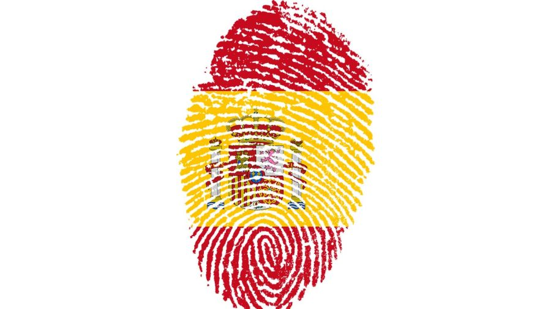

Los principales requisitos exigen comprobar la nacionalidad y el exilio durante la dictadura. Pasaporte o título de viaje con sello de entrada en el país de acogida. Certificación del registro de matrícula del Consulado español
Los principales requisitos exigen comprobar la nacionalidad y el exilio durante la dictadura. Pasaporte o título de viaje con sello de entrada en el país de acogida. Certificación del registro de matrícula del Consulado español

Los bisnietos se encuentran abarcados por la Ley de Nietos a través del anexo III que establece “los hijos e hijas mayores de edad de españoles a quienes les fue reconocida su nacionalidad de origen”, se encuentran habilitados a tramitar y convertirse en beneficiarios de la ciudadanía española

El plazo establecido para la Ley de Memoria Democrática, continuará vigente hasta el 21 de octubre de 2025. Los trámites para este procedimiento se realizan en el Registro Civil de España o en el Registro Civil del Consulado Español del país de residencia del solicitante.
Analizaremos tu situación personal para establecer una estrategia clara que se adapte a tus necesidades, tiempo y objetivos. Trazaremos un plan para que puedas obtener la nacionalidad española de la manera más viable, según tus expectativas a corto, medio y largo plazo.
Nuestros servicios incluyen la preparación de tu solicitud de nacionalidad y la documentación necesaria para asegurarnos de que cumplen cada uno de los requisitos exigidos por la ley. Cuidamos todos los aspectos para evitar errores que puedan retrasar tu plan de obtener la nacionalidad en España.
Te ayudamos con la matrícula y te indicamos como preparar los exámenes de nacionalidad, que consisten en dos exámenes, uno sobre conocimientos constitucionales y socioculturales de España (CCSE) y otro de español (DELE A2). Estos son diseñados y administrados por el Instituto Cervantes, que, en caso de suspenso, te da derecho a otra convocatoria. Por el siguiente CCSE no hay que volver a pagar; pero por el DELE A2, sí. Sin embargo, el DELE sólo lo hacen quienes provienen de países donde el español no es lengua oficial o cooficial.
Te representamos y asistimos durante todo el proceso, contestamos a los requerimientos y presentamos los escritos necesarios. Además, recepcionamos las notificaciones electrónicas y te gestionamos la cita previa para DNI y pasaporte español.
A través de la interposición de un recurso contencioso-administrativo de nacionalidad española podemos ayudarte a agilizar la respuesta a tu expediente de nacionalidad española.
La denegación de la nacionalidad española no es el fin a tus posibilidades. Podemos ayudarte a presentar un escrito donde se expongan argumentos en contra de la denegación de tu nacionalidad española.
